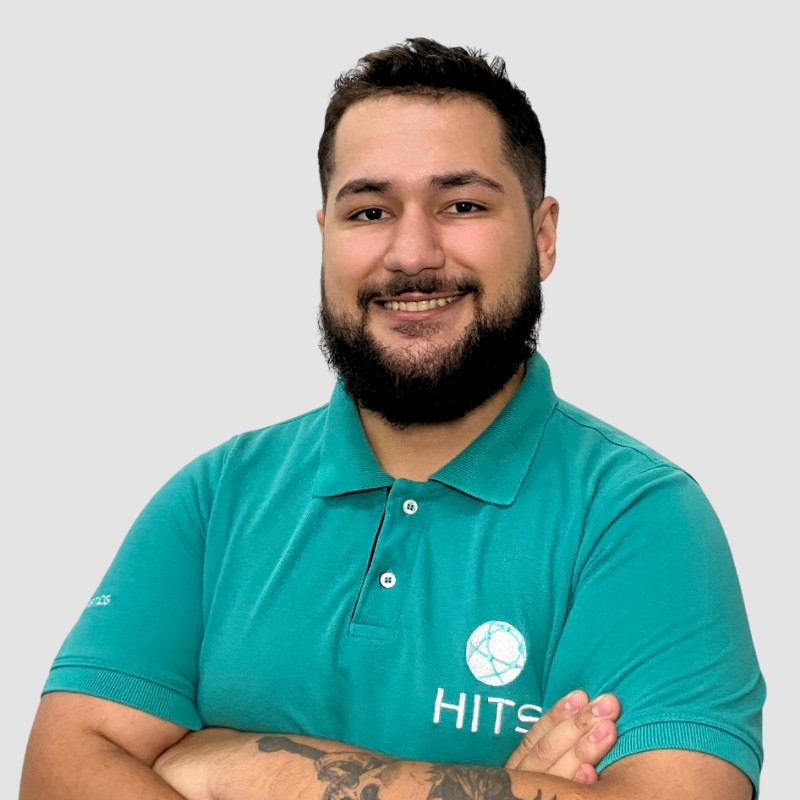

Oi eu sou o Ruan, tenho 22 anos e sou graduando em análise e desenvolvimento de sistemas na UNORTE, busco atuar como desenvolvedor no mercado da tecnologia, onde eu possa demonstrar as skills que adquiri ao longo da minha carreira.
| Habilidade | Básico | Intermediário | Avançado |
|---|---|---|---|
| Inglês | x | ||
| Espanhol | x | ||
| C,C++ | x | ||
| HTML/CSS | x |